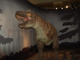
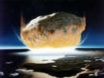

Cryolophosaurus - Ten wielki mięsożerca został odkryty na Antarktydzie
w 1994 r. Po każdej stronie czaszki miał dwa małe rogi, a pośrodku głowy unikalny
grzebień, zbyt cienki by służył jako broń. Specjaliści sądzą, że grzebień pełnił
rolę wabika w sezonie rozrodczym.
Troodon - Z oddali troodona można wziąć za innego dinozaura.
Prawdopodobnie polował w nocy na ssaki. Zęby troodonta znaleziono 150 lat
temu, ale aż do XX w. wiedza o nim była bardzo skromna.
Tyranozaur - Tyrannosaurus rex był jednym z największych lądowych
drapieżników w historii Ziemi. Największy

Tyranozaurus Rex odnaleziony dotąd, a zarazem najbardziej
kompletny okaz to szkielet z Muzeum Historii Naturalnej w Chicago oznaczony jako
FMNH PR2081, szerzej znany pod nieformalnym imieniem "Sue". Są to pozostałości osobnika
mierzącego 12,8 metra długości i 4 m wysokości (mierzonej od ziemi do stawów biodrowych).
Znane są pojedyncze skamieniałości, czy nawet bardzo niekompletne szkielety mogące
należeć do jeszcze większych osobników, jednak oparte na tych skamielinach szacunki
nie są pewne. Na przykład szkielet tyranozaura odkrytego przez zespół pod kierownictwem
Jacka Hornera w 2000 w Montanie, oznaczonego MOR 1126 (nazywanego „C-rex” lub „Celeste”),
według wstępnych szacunków poprzedzających dokładniejsze badania miałby być o 10%
większy od szkieletu „Sue". W historii badań nad tyranozaurem proponowano różne
oszacowania masy jego ciała: od niespełna 4500 kg do 7200 kilogramów. Obecnie większość
szacunków zamyka się w przedziale od 5400 do 6800 kg. Choć Tyrannosaurus rex osiągał
większe rozmiary niż późnojurajski teropod Allosaurus, był jednak nieco mniejszy
od kredowych drapieżników z rodzajów Spinosaurus i Giganotosaurus Porównanie rozmiarów
wybranych gatunków wielkich teropodów Szyja tyranozaura była zakrzywiona na kształt
litery S, podobnie jak u innych teropodów. Była jednak krótsza i bardziej umięśniona,
ponieważ dźwigała ciężką głowę. Trójpalczaste kończyny przednie osiągały małe rozmiary
w porównaniu z resztą ciała, miały jednak mocną budowę. W przeciwieństwie do nich
tylne były pod względem proporcji do całkowitej długości zwierzęcia jednymi z najdłuższych
wśród wszystkich teropodów. Ogon był bardzo ciężki i długi (czasami składał się
z ponad 40 kręgów) i stanowił przeciwwagę dla ciężkiej głowy i tułowia. W związku
z dużymi rozmiarami zwierzęcia wiele kości było w środku pustych, co zmniejszało
masę szkieletu, nie pozbawiając go wytrzymałości. Największa znana czaszka T. rex
(oznaczona MOR 008), odkryta w Montanie w latach 60. XX wieku, miała długość około
1,5 metra. Duże otwory w czaszce (fenestrae) zmniejszały jej ciężar i zapewniały
powierzchnię przyczepu mięśni, podobnie jak u innych dużych mięsożernych teropodów.
Jednakże w innych aspektach czaszka tyranozaura była znacząco odmienna od czaszek
innych teropodów nie należących do tyranozauroidów. Niezwykle szeroka w tylnej części,
posiadała wąski pysk, co dawało zwierzęciu możliwość widzenia stereoskopowego. Kości
czaszki były masywne, a niektóre z nich, jak na przykład kości nosowe, spojone ze
sobą, co sprawiało, że nie zmieniały położenia względem siebie. Jednak z drugiej
strony tyranozaur posiadał wiele kości pneumatycznych, co mogło zapewniać im większą
elastyczność, jak i zmniejszać masę czaszki. Dzięki tym i innym wzmocnieniom czaszki
T. rex miał największą siłę szczęk spośród wszystkich dinozaurów oraz jedną z największych
spośród wszystkich poznanych dotychczas zwierząt. Czaszka tyranozaura, widoczne
dobrze zachowane uzębienie Podobnie jak inne tyranozauroidy, T. rex miał uzębienie
wyraźnie heterodontyczne. Jego zęby premaksillarne (położone w przedniej części
górnej szczęki, odpowiadające siekaczom) były gęsto rozmieszczone i zakrzywione
do tyłu. W przekroju miały kształt litery D, miały piłkowane krawędzie, a ich czubki
kształtem przypominały dłuto. Kształt zębów zmniejszał ryzyko ich wypadnięcia w
chwili, gdy tyranozaur gryzł i szarpał ciało ofiary. Duże ślady po ugryzieniach
znajdowane na szkieletach innych dinozaurów wskazują na to, że tego typu zęby mogły
przecinać nawet twarde kości. Często odnajduje się zużyte lub połamane zęby tyranozaura,
ale w przeciwieństwie do zębów ssaków mogły być wymieniane przez całe życie zwierzęcia.
Pozostałe zęby także były mocne, jednak ze względu na zakrzywienie kształtem przypominały
bardziej banany niż sztylety. Podobnie jak zęby przedszczękowe (premaksillarne),
miały piłkowane krawędzie. W porównaniu z nimi były szerzej rozstawione. Zęby szczęki
były większe od wszystkich zębów żuchwy z wyjątkiem występujących w jej tylnej części.
Największy znaleziony dotąd ząb tyranozaura miał długość 30,5 cm (wliczając w to
długość korzenia), co czyni go największym znanym zębem mięsożernego dinozaura.
Kreda skończyła się jednym z pięciu największych masowych wymierań zwierząt w historii
(wymieranie kredowe).Wymarły m.in. amonity, belemnity, mozazaury, plezjozaury, pterozaury,
wszystkie dinozaury oprócz ptaków.
Pojawiło się wiele

Meteoryt hipotez na temat wymierania kredowego, z których współcześnie
liczy się tylko jedna: katastrofa kosmiczna, czyli zderzenie z meteorytem o średnicy
szacowanej na 10 km, lub nawet kilkakrotnie większym. Jednym z głównych dowodów
na katastrofę kosmiczną jest istnienie serii kraterów uderzeniowych, które powstały
właśnie ok. 65 milionów lat temu. Największy odkryty krater, co do którego mamy
pewność że utworzył się w wyniku upadku meteorytu, nazwany Chicxulub, a właściwie
jego pozostałości, znajduje się na półwyspie Jukatan w Ameryce Środkowej. Chociaż
rozmiary krateru są olbrzymie, ma on średnicę ok. 200-470 km i głębokość 1600 metrów,
to jego odnalezienie sprawiło początkowo wiele trudności, gdyż został pokryty grubą
warstwą osadów. Badania amerykańsko-czeskiego zespołu w 2007 roku wskazują, że planetoidy
które uderzyły w Ziemię 65 mln lat temu, mogły pochodzić ze zderzenia w pasie planetoid
ok. 160 mln lat temu, które utworzyło planetoidę 298 Baptistina. Mniejsze fragmenty
macierzystego ciała zostały wyrzucone na orbity przecinające się z orbitą Ziemi,
a następnie zderzyły się z naszą planetą oraz utworzyły krater Tycho na Księżycu.